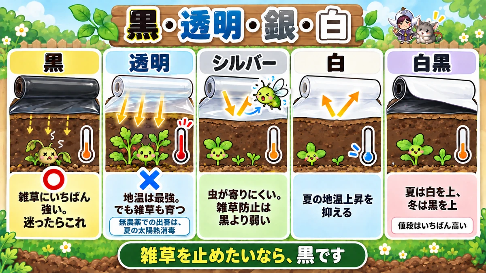

Each colour of mulch film is a different tool 🌱 Choose clear and you'll get a bed full of weeds

🌱 "I laid mulch film and the weeds came up anyway."
🌱 "The wind got under it and it's peeled back off the bed."
🌱 "I bought a roll and it didn't fit my bed."
Hello, I'm Eiko. Eight years of growing vegetables, organically and without pesticides, and a teaching licence in science.
Today: plastic mulch film. I've written "lay black mulch" in a lot of articles without explaining it properly, so here it is.
The most important line first:
Each colour is a different tool.
And if you use clear film in an organic garden, you will get a bed full of weeds 🌱
Mulch does six things, not one
It works harder than people think
Most people file mulch under "weed control". It's actually doing six jobs:
- Keeps the soil as you made it — rain can't beat it down and compact it
- Stops it drying out — and equally, stops too much rain getting in
- Suppresses weeds
- Evens out soil temperature — against heat and against cold
- Stops rain splashing soil onto the plant — which prevents disease
- Protects what grows underground — potatoes, onions
The splash one comes later
Number 5 is the one nobody counts, and it's the most interesting. It gets the science section at the end.
One honest drawback
Used plastic film becomes waste. If that bothers you, straw, dried weeds or rice hulls do the same job in the same direction — that's how it was done before plastic.
The colours do completely different jobs

What this diagram says （図解の文字）
- Title: "Black / Clear / Silver / White"
- Black ○ — "strongest against weeds. If in doubt, this one."
- Clear ✗ — "best for soil warmth. But the weeds grow too." "In an organic garden its use is summer solarisation."
- Silver — "insects keep away. Weaker on weeds than black."
- White — "holds down summer soil temperature."
- White/black — "white side up in summer, black side up in winter. The most expensive."
- Bottom line: "If you want to stop weeds, it's black."
① Black — if in doubt, this one
The standard, and the strongest against weeds. I use black about nine times out of ten. If you're growing organically, make black your default.
② Clear — best for warmth, but
Clear film warms the soil more than any other colour. So you think: surely clear is the one for cold weather?
Here's the trap. Clear film lets light through — so the weeds grow under it, warm and comfortable.
It's a material designed for gardens that use herbicide. Use it without, and the sheet becomes a weed nursery.
Where clear film genuinely belongs
So is it useless organically? No — summer solarisation.
In the hottest weeks of your summer, wet the soil thoroughly and seal it under clear film. The temperature underneath climbs high enough to weaken soil pathogens and weed seed.
It works for as long as the sun is still strong — here that's through to about six weeks before the first cool weather. If you have an empty bed in high summer, it's worth doing.
③ Silver — for insects
The reflective type. The glare makes it harder for insects to settle — it's particularly good against aphids. But it's weaker on weeds than black, so I'd use it selectively, on leafy crops during the worst of the insect season.
④ White — for summer heat
White holds the soil temperature down in summer. Useful when you're planting into high heat and want to protect the roots. Weed suppression is weaker still than silver — accept that trade.
⑤ White-on-black — both at once
There's film that's white on one face and black on the other. The white face keeps the soil cool; the black face blocks light to the weeds. White side up in summer, black side up in winter — one roll does both. It's also the most expensive.
In short
- Stop weeds → black
- Warm the soil without herbicide → black
- Solarisation → clear
- Fewer aphids → silver
- Cool the soil in high summer → white or white/black
Build the bed to fit the film, not the other way round
What this diagram says （図解の文字）
- Title: "The critical point is a gap at the edge."
- 1 "cover the whole bed" → 2 "line the centre line up with the middle of the bed and pin it temporarily" → 3 "tread it out with your foot and soil one side" → 4 "go round the other side, pull it taut, and soil that edge"
- "Buy the film after you've built the bed and it may not fit." Film 95 cm (37 in) ／ bed 60–70 cm (24–28 in)
- ✗ "a gap at the edge" ／ ○ "weigh the whole perimeter down with soil"
- Lifting it: "one pass round, 10–15 cm (4–6 in) out from the edge, and it comes up without tearing"
- Bottom line: "Pins are temporary. Soil is what holds it."
Know the width first
This is about the order you do things in.
The standard film here is 37 in (95 cm) wide, which means a bed of 24–28 in (60–70 cm) is covered nicely with enough left over to bury. Widths differ by supplier, so check your roll and build the bed to suit it.
Build the bed first and go shopping afterwards and it may simply not fit. I've done that once 😅
Line up the centre line
There's a line printed down the middle of the film. Put that on the middle of the bed before you pin anything. Get it off-centre and one side won't have enough film left to bury.
Pins are temporary
This is the most misunderstood part. You push the pegs in and feel like the job is done.
Pegs are a temporary hold. Soil is what actually keeps film down.
Tread it out, then bury the edges
- Lay the film over the whole bed
- Line up the centre line and pin it temporarily
- Tread along it to stretch it out while you soil one edge
- Go round to the other side, pull it taut, and soil that edge
Don't finish one whole side first. Work from both sides toward the middle, a bit at a time.
The critical point is gaps
There's really only one rule for laying it:
No gaps anywhere around the edge.
A gap lets wind underneath, and the sheet balloons up and flies like a kite. Weigh the whole perimeter down with soil and it will stay put even if it's a little slack.
Making the planting holes
- Cut them yourself with a hole cutter
- Buy pre-holed film (6 in / 15 cm spacing, and so on)
- Use the perforated type and open only the holes you want
If the crop has a fixed spacing, pre-holed film is faster.
There's a trick to lifting it, too
At the end of the season, pulling from one end tears it. The buried part snaps off and leaves plastic fragments in your soil, which is genuinely annoying to deal with.
Instead: push a spade in 4–6 in (10–15 cm) outside the edge and lever it up, once round the perimeter. Then the whole sheet lifts out in one piece.
🔬 The science: black film is simply blocking light
What this diagram says （図解の文字）
- Title: "Black is blocking the light."
- "Black absorbs light and turns it into heat. White and silver reflect it."
- Black film ○ — "they germinate, but they can't photosynthesise"
- Clear film ✗ — "light, water and warmth all present at once"
- No mulch — "disease usually starts on the lower leaves" ／ With mulch ○
- Bottom line: "You laid it for the weeds — it's also reducing disease."
Why does colour make the difference?
Back to "clear film grows weeds". Why should the colour matter at all?
The answer is photosynthesis
Weed seeds do germinate under black film. There's warmth and moisture down there. What they can't do is grow past that point — no light reaches them, so they can't photosynthesise. They spend the food packed in the seed getting that far, and then they stop.
Clear film reverses it
Under clear film the light comes straight through, and underneath it is warm and damp. All three conditions for germination are present, ideally.
In my article on sowing I wrote that seeds need water, air and the right temperature. Clear film hands all of it to the weeds.
Colour and heat
The same idea explains the temperature differences:
- Black absorbs light and turns it into heat
- White and silver reflect it
Same sunshine, different amount of heat reaching the ground. Using white in high summer is simply bouncing the sun back off before it gets into the soil.
Splash carries disease
Now the one I put off. Soil contains the organisms that cause plant disease. When it rains, raindrops hit the ground and throw soil upward — and that soil lands on the undersides of the leaves.
Why disease starts low down
Think about where you usually see it first: the lower leaves. The closer to the ground, the more splash lands there.
Mulch physically stops the bounce.
A sheet you laid to deal with weeds is quietly reducing disease as well. Knowing that changed how I look at mulch ☺️
To sum up
- ✅ Mulch does six jobs: soil structure, moisture, weeds, temperature, splash, protecting what's underground
- ✅ Black is strongest on weeds. If in doubt, black
- ✅ Clear warms best but grows weeds — organically, its use is solarisation
- ✅ Silver reflects light and deters aphids; white holds summer heat down; white/black does both
- ✅ Check the film width, then build the bed to fit it
- ✅ Centre line on the middle of the bed
- ✅ Pins are temporary. Soil holds it down
- ✅ No gaps around the edge — that's the whole of not losing it to wind
- ✅ Lift it with a spade 4–6 in outside the edge
- ✅ Black stops weeds because they can't photosynthesise, not because they can't germinate
- ✅ Stopping splash is also stopping disease
You don't have to do all of it. Next time you lay a sheet, just walk the perimeter once looking for gaps. That alone stops it blowing away 🌱
Thank you for reading!